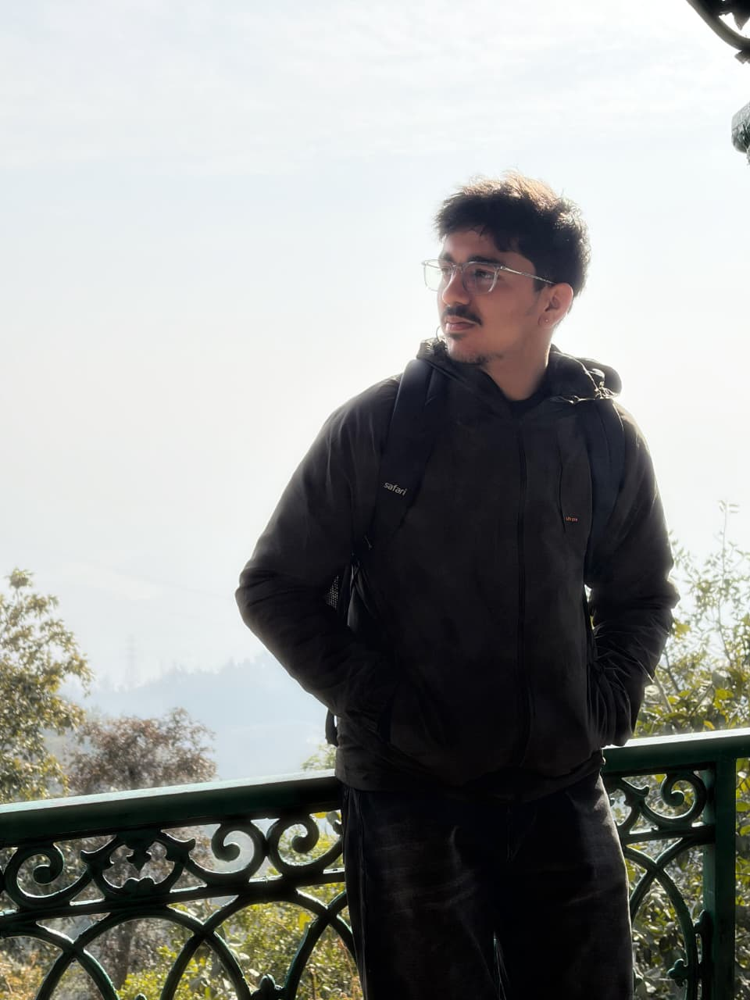
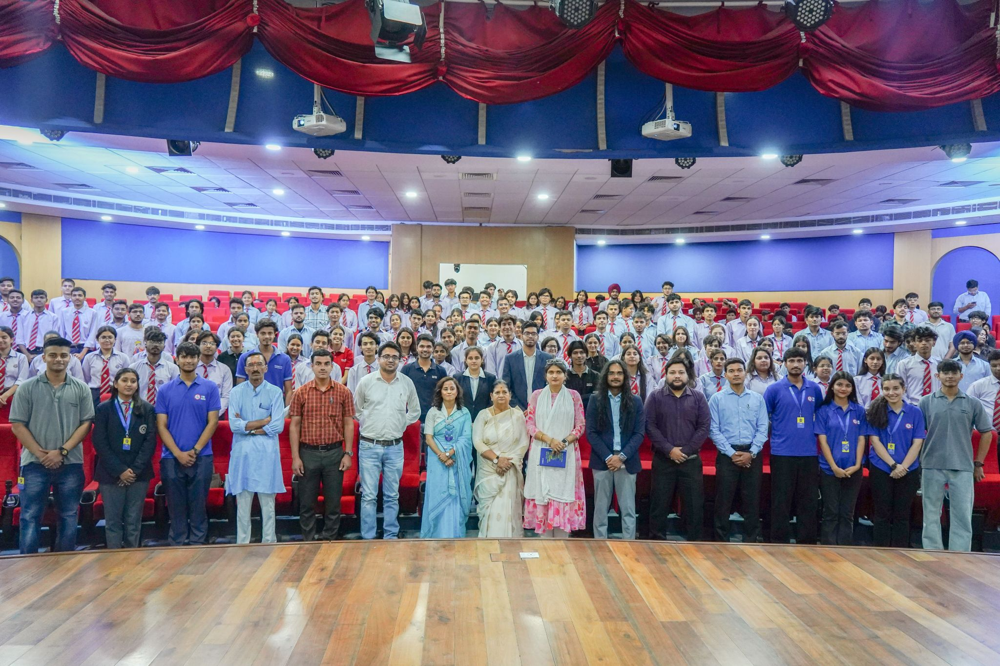
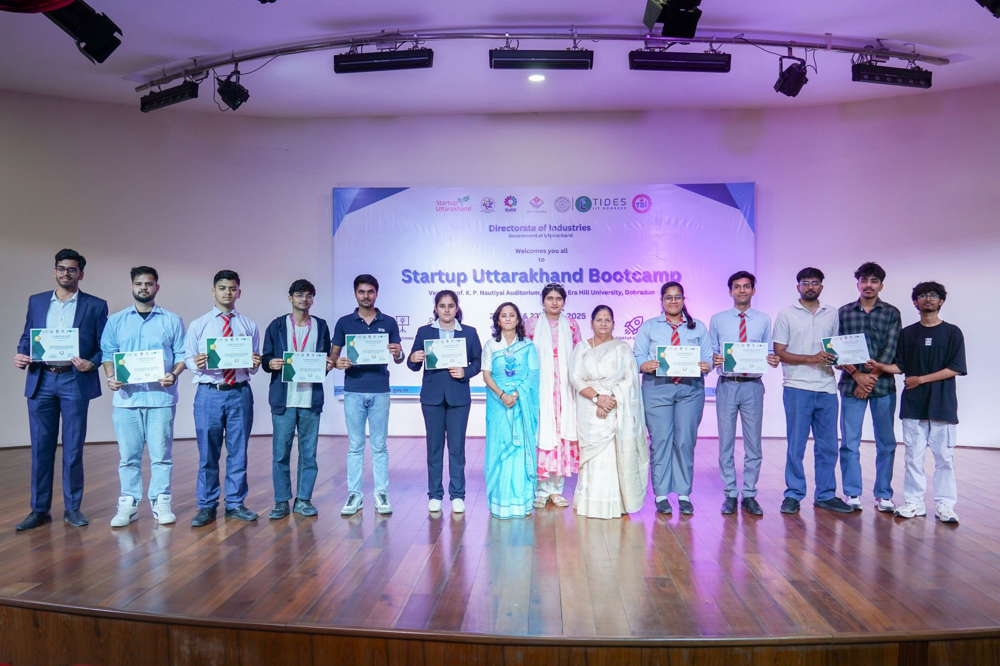
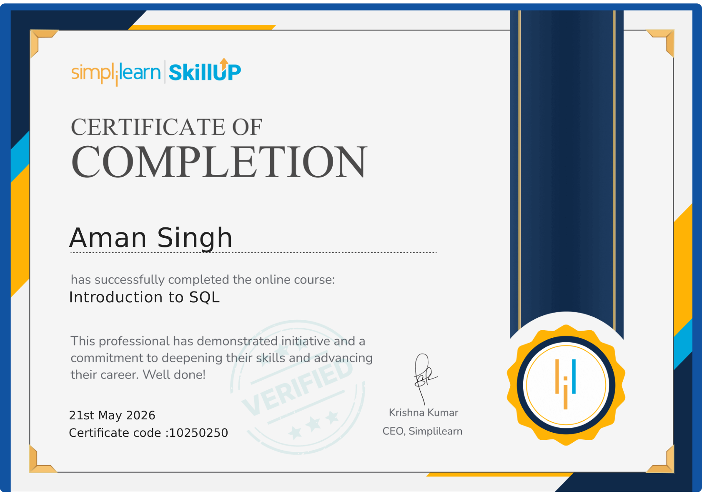
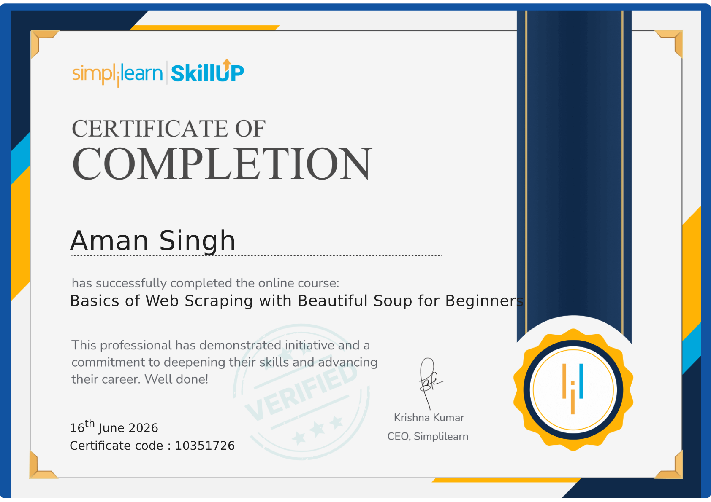
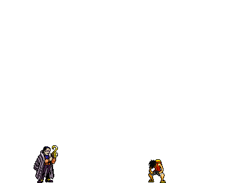

01 / SOFTWARE ENGINEERING
Software Engineering Resume
For entry-level software engineering roles focused on programming, problem solving, applications, and building reliable products.
Open to fresher software & data roles
I’m Aman Singh, a recent Computer Science graduate looking for my first opportunity in software engineering or data analytics. I enjoy building practical products, solving technical problems, and turning information into decisions people can act on.

++Role-specific profiles / 01
Two versions of my resume for the two directions I am actively pursuing as a fresher.
01 / SOFTWARE ENGINEERING
For entry-level software engineering roles focused on programming, problem solving, applications, and building reliable products.
02 / DATA ANALYTICS
For entry-level data analyst roles focused on Python, SQL, dashboards, exploration, and communicating useful insights.
Selected work / 01
A mix of software, machine learning, and data projects built to answer real questions and solve practical problems.
model = RandomForestClassifier(
n_estimators=200,
class_weight='balanced')
model.fit(X_train, y_train)
>> risk_score: 0.784
An end-to-end machine learning project that helps telecom teams identify customers likely to leave and prioritize retention efforts.
02 / CUSTOMER ANALYTICS
Customer-level analysis using Python, Pandas, and SQL to explore behavior and business patterns.
View project ↗03 / DATA ANALYSIS
Interactive analysis of customer purchasing trends, segments, loyalty, and category performance.
View project ↗04 / MACHINE LEARNING
A machine learning classifier that separates spam from legitimate messages.
View project ↗05 / HARDWARE
A portable monitoring concept combining healthcare needs with an embedded systems approach.
View project ↗06 / RECOMMENDATION
A recommendation system that uses user and movie data to surface relevant titles.
View project ↗07 / DATA QUALITY
A data-quality framework for improving e-commerce revenue reporting, validating business metrics, and making insights more reliable.
View project ↗08 / PUBLIC HEALTH
An exploratory data project focused on public health trends, patterns, and insights to support data-driven decision-making.
View project ↗
A little context / 02
I graduated in July 2026 with a Bachelor of Technology in Computer Science and Engineering from Tula’s University, Dehradun. I enjoy cleaning messy datasets, finding patterns, and communicating insights through dashboards and clear visual stories.
Beyond projects, I’m a core member of the ACM Student Chapter and a three-time hackathon podium finisher, including wins at National Level Viksit Bharat, Hack The Future 2.0, and Startup Uttarakhand.
Follow the journey ↗Beyond the projects / 03
Learning, competing, and contributing alongside the technical work.
Secured 3rd position among 100+ teams after a 30-hour coding marathon at Shivalik College Dehradun and received a ₹15,000 prize.
Finished 2nd Runner-Up at a national-level 30-hour coding competition hosted by Tula’s University. Our team also built a cardiogram prototype during the hackathon.
Secured 2nd position among 180+ teams with a ₹25,000 prize and a ₹5 lakh seed grant to develop the solution.
Core member contributing to technical events, peer learning, and student community initiatives.
Completed Introduction to SQL and Basics of Web Scraping with Beautiful Soup for Beginners.
Completed at Tula’s University, Dehradun · 2022–2026.
Hack The Future 2.0 / 04
Building a cardiogram prototype, presenting our work, and taking home 2nd Runner-Up.

.jpeg)

.jpeg)

Team Clover / 05
A consecutive run of competition, collaboration, and ideas that moved from the page toward real-world impact.
On 8 and 9 October 2025, Team Clover from Tula’s University achieved two consecutive national-level wins at Shivalik College Dehradun. Each challenge pushed us to refine our ideas, strengthen our execution, and keep building together.
After an intense 30-hour coding marathon among 100+ teams from across India, we secured 3rd position and received a ₹15,000 cash prize.
The next day, we competed among 180+ teams from institutes and startups nationwide, presenting an idea aligned with the United Nations Sustainable Development Goals. We secured 2nd position, a ₹25,000 cash prize, and a ₹5 lakh seed grant to develop the solution.
Heartfelt thanks to Shivalik College Dehradun for organizing such impactful events and to Tula’s University for its continuous guidance and encouragement.

.jpeg)
Startup Uttarakhand / 06
A two-day bootcamp that turned an ambitious pitch into a motivating milestone.


Over two days at Graphic Era Hill University, Dehradun, the Startup Uttarakhand Bootcamp brought together passionate innovators, mentors, and leaders to fuel entrepreneurship in Uttarakhand. Hosted by TBI GEU in collaboration with TIDES, IIT Roorkee and the District Industries Centre, Dehradun, the experience moved from startup-building sessions to an intensive pitch judged by an expert panel.
I’m grateful for the insights shared by Mr. Azam Ali Khan, CEO of TIDES-IIT Roorkee; Mr. Tanuj Dani, Program Manager at TIDES; Dr. Sidharth Arora, CEO of Fermentech Labs; Ms. Anjani Rawat Negi, GM of DIC Dehradun; and the many other inspiring mentors and leaders.
This recognition is a motivating milestone on our entrepreneurial journey. Thank you to my teammates Abhishek Maurya and Devanshu Purohit for the dedication, creativity, and hustle that made it possible.
Learning / 07
Certificates earned while building the technical foundations behind my projects.

Certificate covering core SQL concepts for working with structured data.
Open certificate ↗
Certificate covering the fundamentals of web scraping with Beautiful Soup.
Open certificate ↗Toolkit / 03
A growing set of tools for exploring, explaining, and shipping ideas.
Python · C++ · JavaScript · Problem solving · OOP · Application development
Python · Pandas · NumPy · SQL · Excel · Statistical analysis
Power BI · Matplotlib · Seaborn · Scikit-learn · Predictive modeling
Git · GitHub · VS Code · Jupyter Notebook · Streamlit · APIs
Have a question? / 04
Whether you want to discuss data, a project, or an opportunity, I would love to hear from you.
amangusainofficial@gmail.com ↗